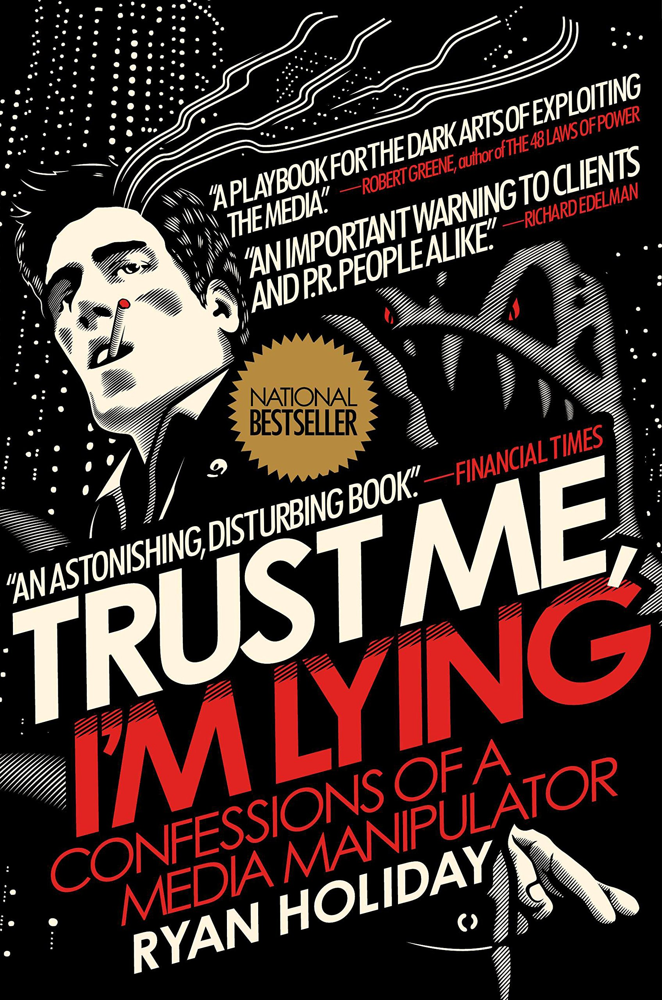

Trust Me, I'm Lying: Confessions of a Media Manipulator
Hardcover 13.99 $
The cult classic that predicted the rise of fake news—revised and updated for the post-Trump, post-Gawker age.
Nearly 2,300 years after a ruined merchant named Zeno first established a school on the Stoa Poikile of Athens, Stoicism has found a new audience among those who seek greatness, from athletes to politicians and everyone in between. It's no wonder; the philosophy and its embrace of self-mastery, virtue, and indifference to that which we cannot control is as urgent today as it was in the chaos of the Roman Empire.
Hailed as "astonishing and disturbing" by the Financial Times and "essential reading" by TechCrunch at its original publication, former American Apparel marketing director Ryan Holiday’s first book sounded a prescient alarm about the dangers of fake news. It's all the more relevant today.
Trust Me, I’m Lying was the first book to blow the lid off the speed and force at which rumors travel online—and get "traded up" the media ecosystem until they become real headlines and generate real responses in the real world. The culprit? Marketers and professional media manipulators, encouraged by the toxic economics of the news business.
Whenever you see a malicious online rumor costs a company millions, politically motivated fake news driving elections, a product or celebrity zooming from total obscurity to viral sensation, or anonymously sourced articles becoming national conversation, someone is behind it. Often someone like Ryan Holiday.
As he explains, “I wrote this book to explain how media manipulators work, how to spot their fingerprints, how to fight them, and how (if you must) to emulate their tactics. Why am I giving away these secrets? Because I’m tired of a world where trolls hijack debates, marketers help write the news, opinion masquerades as fact, algorithms drive everything to extremes, and no one is accountable for any of it. I’m pulling back the curtain because it’s time the public understands how things really work. What you choose to do with this information is up to you.”